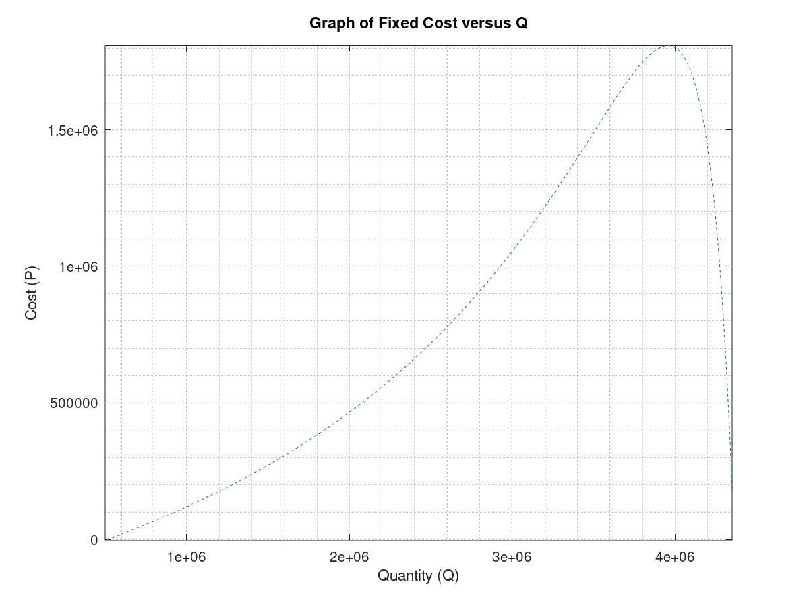
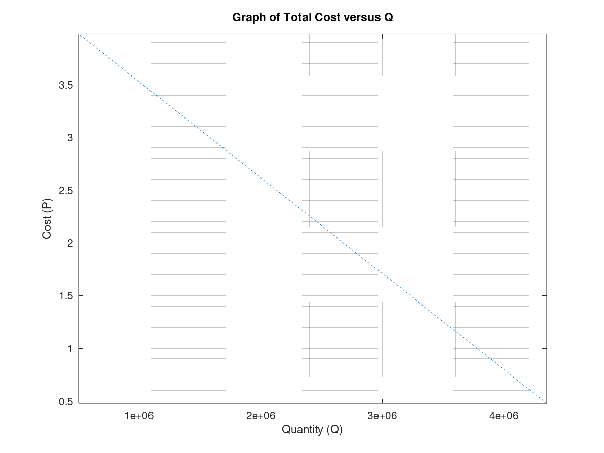
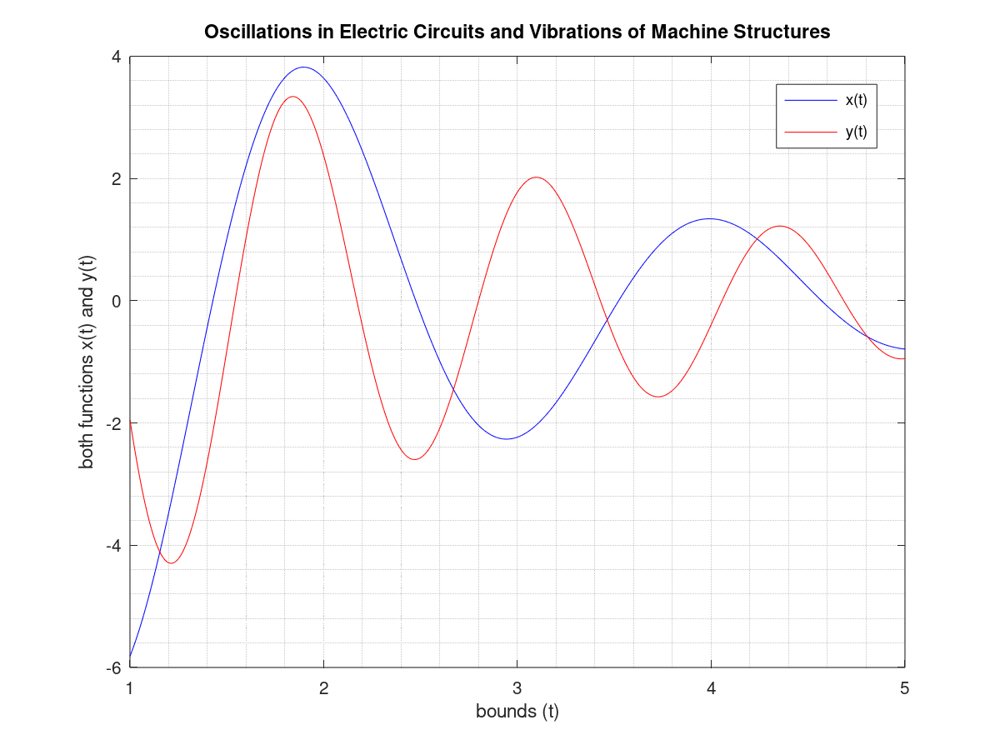
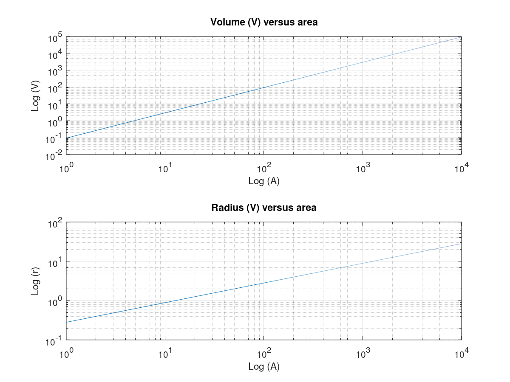
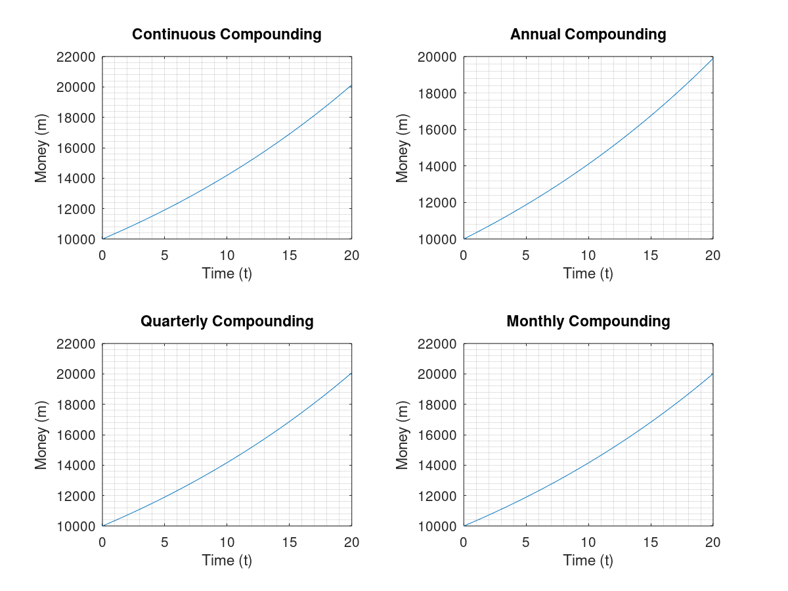
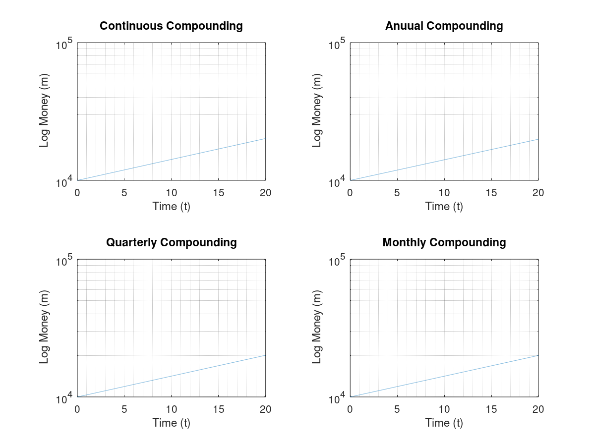
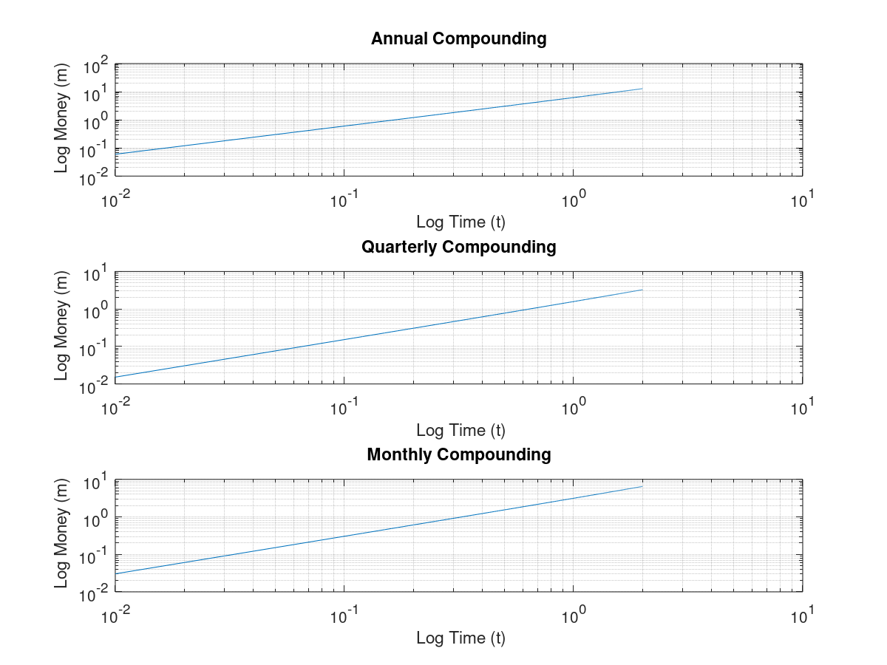
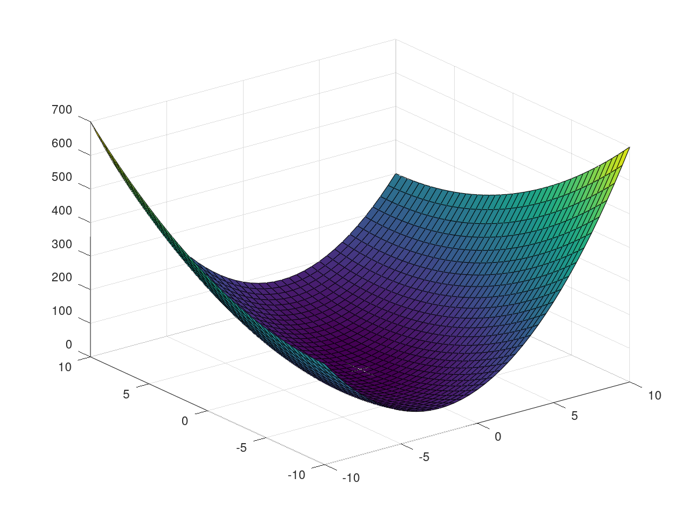

Authored by: Andres Choque Authored on: 9/30/2020
close clear all clc %{ Consider the following costs for a certain chemical product: Fixed cost: 2.045 million/year. Variable costs: Material cost: 62 cents per gallon of product. Energy cost: 24 cents per gallon of product. Labor cost: 16 cents per gallon of product. Assume that we produce only what we sell. Let P be the selling price in dollars per gallon. Suppose that the selling price and the sales quantity Q are interrelated as follows: Q = 6 x 10^6 - 1.1 x 10^6(P). Accordingly, if we raise the price, the product becomes less competitive and sales drop. Use this inform- ation to plot the fixed and total variable costs versus Q, and graphically determine the breakeven point(s). Fully label the plot and mark the breakeven points. For what range of Q is production profitable? for what values of Q is profit a maximum? %} % Pseudocode % Initialize variables % Plot the fixed and total variable costs % Determine the breakeven points % Display the results % Initialize variables P = 1.5:0.01:5; T = P-0.62-0.24-0.16; for j = 1:size(P,2) S(j)=(6*10^6-1.1*10^6*P(j)-2045000/T(j))/T(j); Q(j)=6*10^6-1.1*10^6*P(j); end % Plot the fixed and total variable costs % Determine the breakeven points plot(Q,S,'--'), grid minor axis([min(Q) max(Q) min(S) max(S)]) title('Graph of Fixed Cost versus Q') xlabel('Quantity (Q)') ylabel('Cost (P)') figure plot(Q,T,'--'), grid minor axis([min(Q) max(Q) min(T) max(T)]) title('Graph of Total Cost versus Q') xlabel('Quantity (Q)') ylabel('Cost (P)') % Display the results fprintf('The production has a maximum profit of 1.8009e+06 for Q = 3,954,000. \n') fprintf('Thefore the production is not profitable. \n')
The production has a maximum profit of 1.8009e+06 for Q = 3,954,000. Thefore the production is not profitable.
close clear all clc %{ The following functions describe the oscillations in electric circuits and the vibrations of machines and structures. Plot these functions on the same plot. Because they are similar, decide how best to plot and label them to avoid confusion. x(t) = 10e^-(0.5t)sin(3t+2) y(t) = 7e^-(0.4t)cos(5t-3) %} % Pseudocode % Initialize variables % Plot the functions on the same plot % Display results % Initialize variables t=1:0.01:5; for k = 1:401; x(k) = 10*exp(-0.5*t(k))*sin(3*t(k)+2); y(k) = 7*exp(-0.4*t(k))*cos(5*t(k)-3); end % Plot the functions on the same plot. plot(t,x,'b',t,y,'r'), grid minor, legend('x(t)','y(t)') xlabel('bounds (t)') ylabel('both functions x(t) and y(t)') title('Oscillations in Electric Circuits and Vibrations of Machine Structures') % Display results fprintf('For problem 5.15 the graph of functions x(t) and y(t) is seen here:\n')
For problem 5.15 the graph of functions x(t) and y(t) is seen here:
close clear all clc %{ The Volume V and Surface area A of a sphere of radius r are given by V = 4/3*pi*r^3 A = 4*pi*r^2. a. Plot V and A versus r in two subplots. for 0.1 <= r <= 100 m. Choose axes that will result in straight-line graphs for both V and A. b. Plot V amd r versus A in two subplots, for 1 <= A <= 10^4 m^2. Choose axes that will result in straight line graphs for both V and r. %} % Pseudocode % Initialize variables % Plot the functions on the different functions % Display results % Initialize variables % Plot the functions on the different functions % Part a r = 0.1:0.1:100; subplot(2,1,1) for i=1:size(r,2) V(i)=4/3*pi*r(i)^3; end loglog(r,V), grid title('Volume (V) versus radius') xlabel('Log (r)') ylabel('Log (V)') legend('off') subplot(2,1,2) for i=1:size(r,2) A(i)=4/3*pi*r(i)^2; end loglog(r,A), grid title('Surface Area (A) versus radius') xlabel('Log (r)') ylabel('Log (A)') legend('off') % Part b A = 1:10^4; subplot(2,1,2) for i=1:size(A,2) r(i)=sqrt(A(i)/(4*pi)); end loglog(A,r), grid title('Radius (V) versus area') xlabel('Log (A)') ylabel('Log (r)') legend('off') subplot(2,1,1) for i=1:size(A,2) V(i)=4/3*pi*r(i)^3; end loglog(A,V), grid title('Volume (V) versus area') xlabel('Log (A)') ylabel('Log (V)') legend('off') % Display results fprintf('For problem 5.23 the following represent each subplot: \n')
For problem 5.23 the following represent each subplot:
close clear all clc %{ The current amount A of a principal P invested in a savings account paying an annual interest rate r is given by A = P(1+r/n)^nt where n is the number of times per year the interest is compounded. For continuous compounding, A =Pe^rt. Suppose $10,000 is initially invested at 3.5 percent (r = 0.035). a. Plot A versus t for 0 <= t <= 20 years for four cases: continuous compounding, annual compounding(n=1), quarterly compounding(n=4)m and monthly compounding(n=12). Show all four cases on the same subplot and label each curve. On a second subplot plot the difference between the amount obtained from continuous compounding and the other three cases. b. Redo part a, but plot A versus t on log-log and semilog plots. Which plot gives a straight line? %} % Pseudocode % Initialize Variables % Graph the subplots % Determine which plot gives a straight line % Display the results % Initialize Variables % Graph the subplots % part a t = 0:0.1:20; % Continuous compounding subplot(2,2,1) A1=10000*exp(0.035*t); plot(t,A1), grid minor; title('Continuous Compounding') xlabel('Time (t)') ylabel('Money (m)') % Annual compounding subplot(2,2,2) n=1; for i=1:size(t,2) A2(i)=10000*(1+0.035/n)^(n*t(i)); end plot(t,A2), grid minor; title('Annual Compounding') xlabel('Time (t)') ylabel('Money (m)') % Quarterly compounding subplot(2,2,3) n=4; for i=1:size(t,2) A3(i)=10000*(1+0.035/n)^(n*t(i)); end plot(t,A3), grid minor; title('Quarterly Compounding') xlabel('Time (t)') ylabel('Money (m)') % Monthly compounding subplot(2,2,4) n=2; for i=1:size(t,2) A4(i)=10000*(1+0.035/n)^(n*t(i)); end plot(t,A4), grid minor; title('Monthly Compounding') xlabel('Time (t)') ylabel('Money (m)') % Annual compounding figure subplot(3,1,1) plot(t,A1-A2), grid minor; title('Annual Compounding') xlabel('Time (t)') ylabel('Money (m)') % Quarterly compounding subplot(3,1,2) plot(t,A1-A3), grid minor; title('Quarterly Compounding') xlabel('Time (t)') ylabel('Money (m)') % Monthly compounding subplot(3,1,3) plot(t,A1-A4), grid minor; title('Monthly Compounding') xlabel('Time (t)') ylabel('Money (m)') % part b t = 0:0.01:20; % Continuous compounding subplot(2,2,1) A1=10000*exp(0.035*t); semilogy(t,A1), grid minor; title('Continuous Compounding') xlabel('Time (t)') ylabel(' Log Money (m)') % Annual compounding n=1; subplot(2,2,2) for i=1:size(t,2) A2(i)=10000*(1+0.035/n)^(n*t(i)); end semilogy(t,A2), grid minor; title('Anuual Compounding') xlabel('Time (t)') ylabel(' Log Money (m)') % Quarterly Compounding n=4; subplot(2,2,3) for i=1:size(t,2) A3(i)=10000*(1+0.035/n)^(n*t(i)); end semilogy(t,A3), grid minor; title('Quarterly Compounding') xlabel('Time (t)') ylabel(' Log Money (m)') % Monthly Compounding n=2; subplot(2,2,4) for i=1:size(t,2) A4(i)=10000*(1+0.035/n)^(n*t(i)); end semilogy(t,A4), grid minor; title('Monthly Compounding') xlabel('Time (t)') ylabel(' Log Money (m)') % Annual Compounding figure subplot(3,1,1) loglog(t(2:201),A1(2:201)-A2(2:201)), grid minor; title('Annual Compounding') xlabel(' Log Time (t)') ylabel(' Log Money (m)') % Quarterly Compounding subplot(3,1,2) loglog(t(2:201),A1(2:201)-A3(2:201)), grid minor; title('Quarterly Compounding') xlabel(' Log Time (t)') ylabel(' Log Money (m)') % Monthly Compounding subplot(3,1,3) loglog(t(2:201),A1(2:201)-A4(2:201)), grid minor; title('Monthly Compounding') xlabel(' Log Time (t)') ylabel(' Log Money (m)') % Determine which plot gives a straight line %{ according to the results from above we can conclude that the loglog graphs give straight line outputs %} % Display the results fprintf('For Problem 5.24 these are the following graphs \n')
For Problem 5.24 these are the following graphs
close clear all clc %{ Obtain the surface and contour plots for the function z = x^2-2xy+4y^2, showing the minimum at x = y = 0. %} % Pseudocode % Initialize variables % Plot the function z as a matrix % Display the results % Initialize variables clc, clear, clf m=1; for x = -10:0.5:10; n=1; for y = -10:0.5:10; z(m,n) = x.^2 - 2*x.*y + 4*y^2; n = n+1; end m = m+1; end x = -10:0.5:10; y = -10:0.5:10; % Plot the function z as a matrix [X,Y] = meshgrid(x,y); surf(X,Y,z) figure(2) contour(X,Y,z,10) % Display the results fprintf('For Problem 5.35 the graph of z has minimum points at x = y = 0 \n')
For Problem 5.35 the graph of z has minimum points at x = y = 0